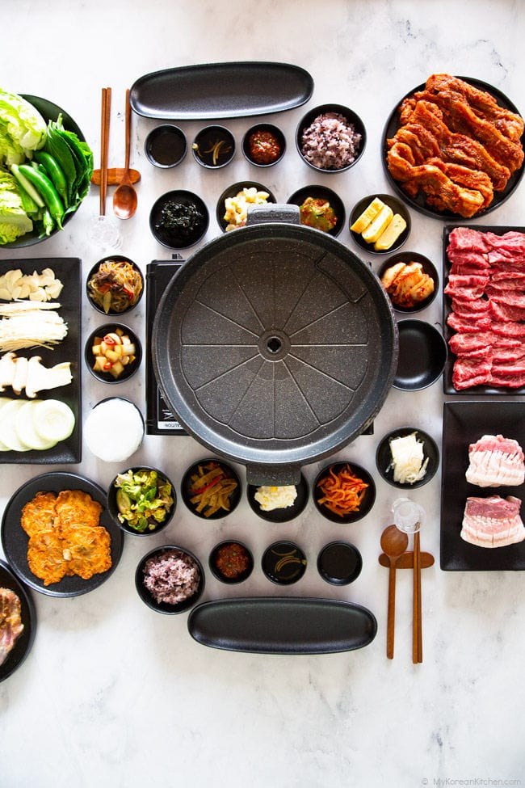

Korean BBQ

Cook yourself as required, be careful as it is hot
Ingredients
- Sliced beef and pork meat
- Mushrooms
- Variety of vegetables
- Korean side dishes
Steps
- Heat up the hot plate
- Use tongs to put meats and vegetables onto the plate to cook
- Once cooked, dip in BBQ sauce and eat whilst it is hot